Zaczynając podróż sentymentalną, obrazującą przeszłość naszej firmy aż po czasy współczesne, prezentujemy zdjęcie symbolizujące rzeczywistość lat 80. XX w. Przedstawia ono samochód ciężarowy marki STAR, należący do Ligi Obrony Kraju (LOK). Warto przekazać zwłaszcza najmłodszym internautom informację, że do końca lat 80. wszelkie szkolenia dla kandydatów na kierowców prowadziły przedsiębiorstwa państwowe, takie jak: Liga Obrony Kraju (LOK), Zakład Doskonalenia Zawodowego (ZDZ), Polski Związek Motorowy (PZM).
Poniższe zdjęcie zostało zrobione na ul. Zygmuntowskiej w Świdnicy, gdzie znajdowała się baza techniczna LOK-u. Zdjęcie pochodzi z prywatnego archiwum jednego z długoletnich świdnickich instruktorów, jednocześnie konstruktora, modelarza i pilota – Włodzimierza Martyńca.
Dla bardziej spostrzegawczych obserwatorów ciekawa adnotacja: popatrzmy ile wówczas było wolnych miejsc do zaparkowania na ul. Zygmuntowskiej w Świdnicy (cała ulica praktycznie pusta). Niestety, te czasy kiedy kierowcy nie mieli żadnych problemów z zaparkowaniem swojego pojazdu, już chyba nigdy nie wrócą.
W latach 50., 60., 70. i 80. XX w. wykładowcy nie dysponowali profesjonalną bazą środków dydaktycznych. Podstawowym narzędziem była zielona tablica i kreda. Kto wówczas myślał, że w XXI w. nastanie era Internetu i środków audiowizualnych? Takie rzeczy można było odnaleźć jedynie w opowiadaniach Stanisława Lema. W tamtych latach bazowano na prostych materiałach poglądowych w postaci odręcznych rysunków i pocztówek. Poniżej przykład jednej z nich.
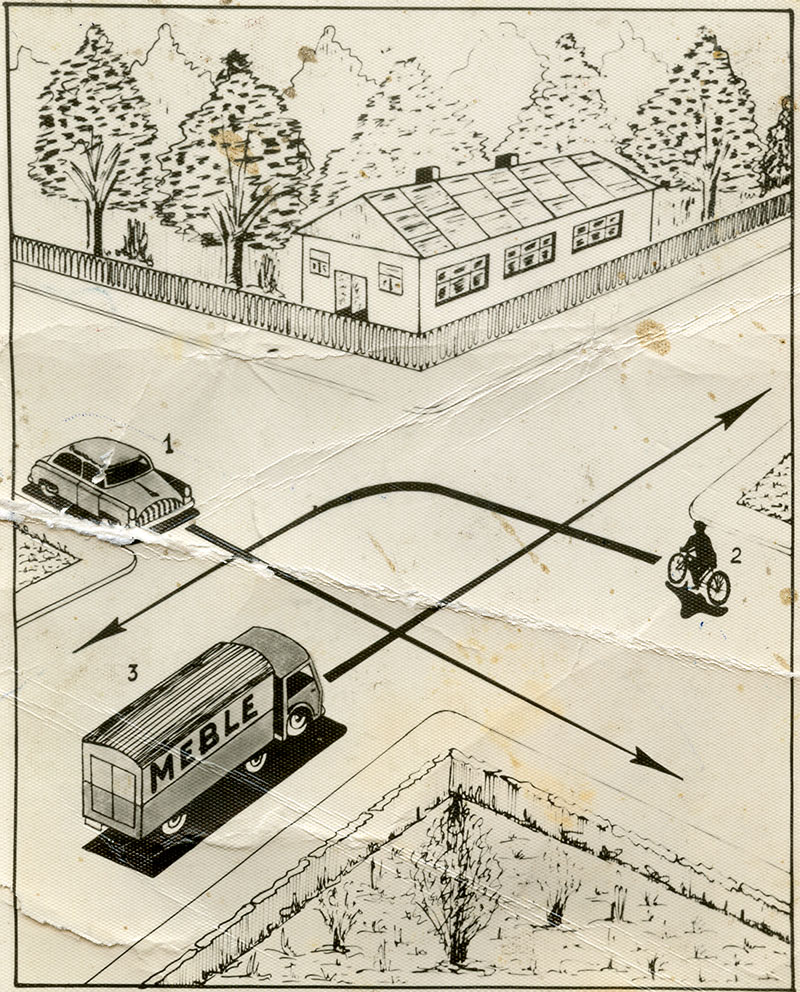W powszechnym użyciu nie było również podręczników do nauki jazdy. Były one jedynie zarezerwowane dla wykładowców. Gospodarka niedoborów sprawiała, że niekiedy i dla nich nie wystarczało profesjonalnych materiałów dydaktycznych. Warto podkreślić, że ówczesne książki były przygotowywane na bardzo wysokim poziomie merytorycznym. Pisane były fachowym i jednocześnie zrozumiałym językiem technicznym. Poniżej prezentujemy przykłady niektórych z nich. Na fotografii w prawym, dolnym rogu widnieją pozycje przedwojenne.
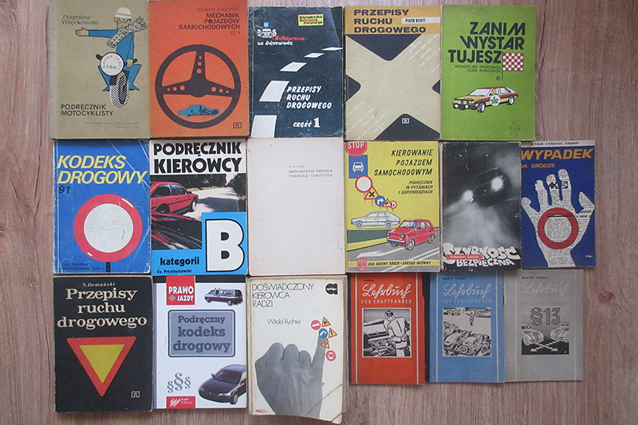Znamiennym jest fakt, że bardziej ambitni wykładowcy kupowali sobie w tamtych czasach specjalne zeszyty formatu A4, do których wklejali lekcje, opracowywane przez płk. Henryka Próchniewicza w czasopiśmie pt. „Żołnierz Polski”.
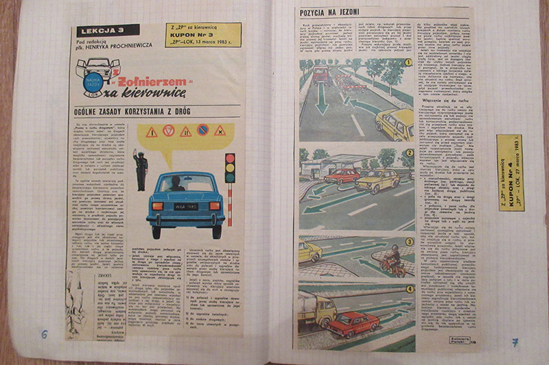W latach 80. i do połowy lat 90. XX w. w szkoleniu praktycznym dominowały Fiaty 126p (popularne maluchy). Dzisiaj samochody te są prawdziwymi klasykami, jednocześnie wywołując wzruszenie i łezkę w oku. W lipcu 1993 r. na maluchu swój egzamin zdawał Paweł Żuraw, wówczas uczeń drugiej klasy II LO w Świdnicy oraz absolwent kursu w szkole jazdy swojego taty, o charakterystycznej jak na tamte czasy nazwie Prywatna Szkoła Jazdy – inż. Mieczysław Żuraw. Warto nadmienić, że w okresie rodzącego się w Polsce kapitalizmu, słowo „prywatny”, „prywatna” było nie tyle pojęciem modnym i popularnym, co stanowiło przede wszystkim synonim przedsiębiorczości, jakości i rzetelności.
Dodajmy, że w tamtych czasach prawo jazdy można było uzyskać w wieku 17 lat. Poniższe zdjęcie (kolorowe) zostało wykonane wiosną 2014 r. i jest swoistym wspomnieniem tamtego pięknego i niezapomnianego okresu. Zdjęcie czarno-białe jest poglądowe i pochodzi z artykułu K. Brzezińskiego, pt. „Niespełna wiek prawa jazdy w Polsce – zobacz jak zmieniły się egzaminy”.
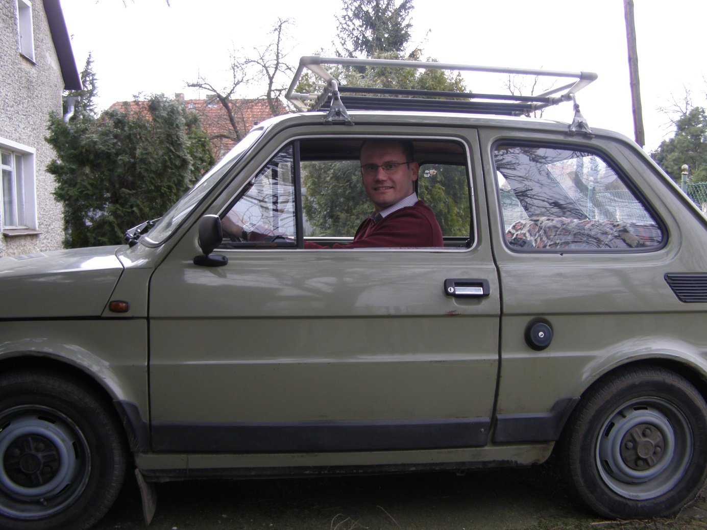 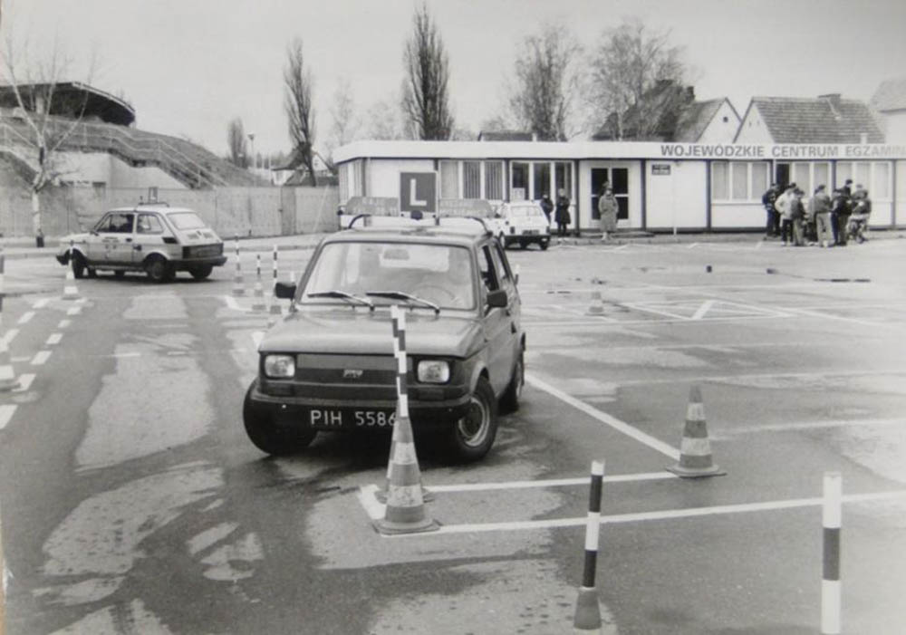Rok 1995 rozpoczął kolejną erę w szkoleniu kandydatów na kierowców. Wałbrzyski ośrodek egzaminacyjny zakupił wówczas samochody marki Fiat Uno. Popularne „uniaki” nabyła również Prywatna Szkoła Jazdy inż. Mieczysława Żurawia. Charakterystyczne dla ówczesnych „L-ek” były duże plafony montowane na dachach pojazdów szkoleniowych, które stanowiły równocześnie reklamę firmy. W tamtych czasach nie używano jeszcze powszechnie telefonów komórkowych a jedynie aparaty stacjonarne. Na plafonie widoczny jest jeszcze numer 52-37-15, który był jedyną formą kontaktu z klientem.
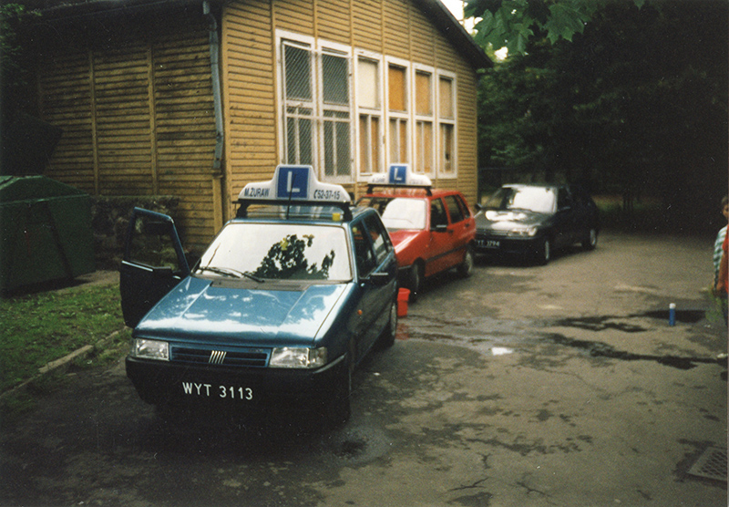 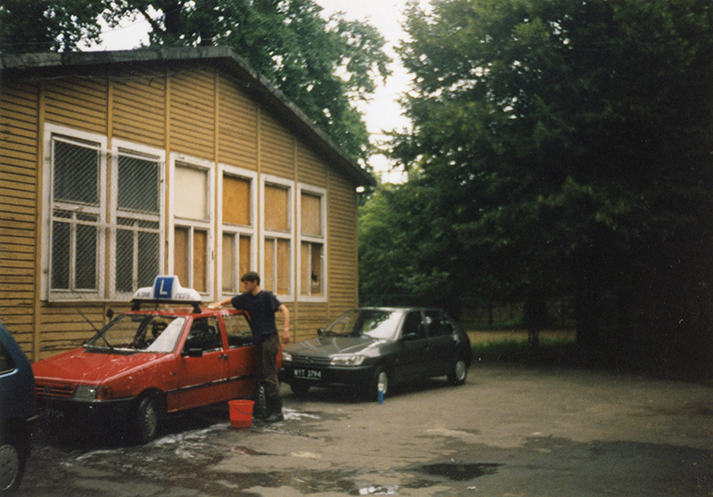Od początku istnienia naszej szkoły zajęcia teoretyczne prowadzone były w II Liceum Ogólnokształcącym w Świdnicy. Na boisku „ogólniaka” wielu młodych adeptów sztuki jazdy rozpoczynało swoją prawdziwą przygodę z samochodem. Od 2010 r. wykłady prowadzone były w Szkole Podstawowej nr 6 oraz w siedzibie naszego biura w Rynku.
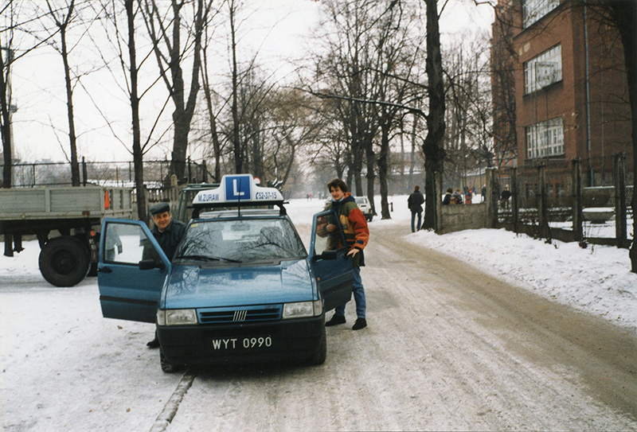Lata 90. i początek pierwszej dekady XXI w. to czas, kiedy w szkoleniu kandydatów na kierowców koncentrowano się w dużej mierze na zadaniach na placu manewrowym (jazda pasem ruchu do przodu i do tyłu oraz wszelkie możliwe manewry parkowania). Tak stanowiły ówczesne przepisy. Poza tym, obowiązywało wówczas 20 godzin zajęć praktycznych, a nie jak jest to obecnie 30 godzin. Instruktorzy przebywając dużą ilość godzin na placu, mieli czas na regenerację sił, rozprostowanie kości i … spokojne zapalenie papierosa.
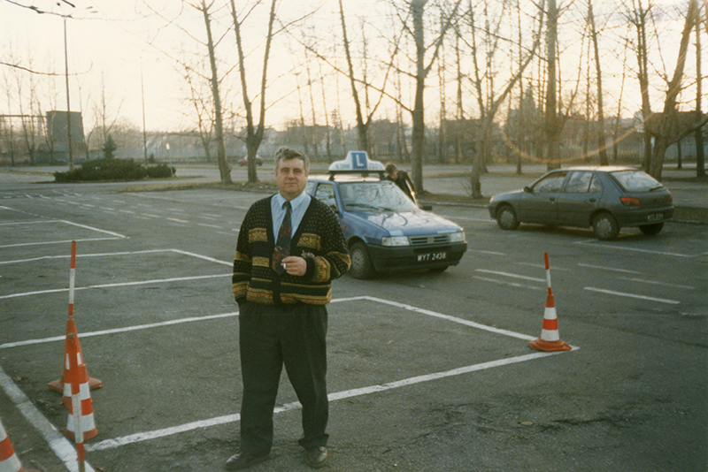Prawdziwym „hitem” na egzaminach na prawo jazdy było pojawienie się w wałbrzyskim ośrodku egzaminacyjnym samochodów marki Daewoo Lanos w wersji sedan. Na tamte czasy była to prawdziwa limuzyna. Był to rok 1998, kiedy polski rynek motoryzacyjny został zdominowany przez koreański koncern Daewoo, montujący samochody na warszawskim Żeraniu. Lanosy były swoistym eksperymentem w procesie szkolenia i egzaminowania. Nie można się temu dziwić, gdyż były to samochody mierzące ponad 4,2 m długości. Przypomnijmy, że jeszcze w 1995 r. szkolono i egzaminowano na maluchach, które miały niewiele ponad 3 m długości. Można powiedzieć: niesamowita przepaść technologiczna.
W 1998 r. Fiaty Uno zostały również wyparte przez samochody marki Fiat Punto I (wersje trzydrzwiowe). Kursanci mieli zatem do wyboru szkolenie i egzaminowanie na lanosach lub puntach.
Na uwagę zasługuje również fakt, że na przełomie lat 90. i dwutysięcznych w Świdnicy istniała filia wałbrzyskiego ośrodka egzaminowania. Mieściła się na terenie Technikum Mechanicznego na ul. Sikorskiego.
Poniższe zdjęcia przedstawiają firmowego lanosa wówczas już Ośrodka Szkolenia Motorowego „ŻURAW” Spółki Cywilnej (gdyż tak nazywała się szkoła na przełomie XX i XXI w.) podczas jednego z festynów miejskich na terenie Świebodzic (jesień 1998 r.).
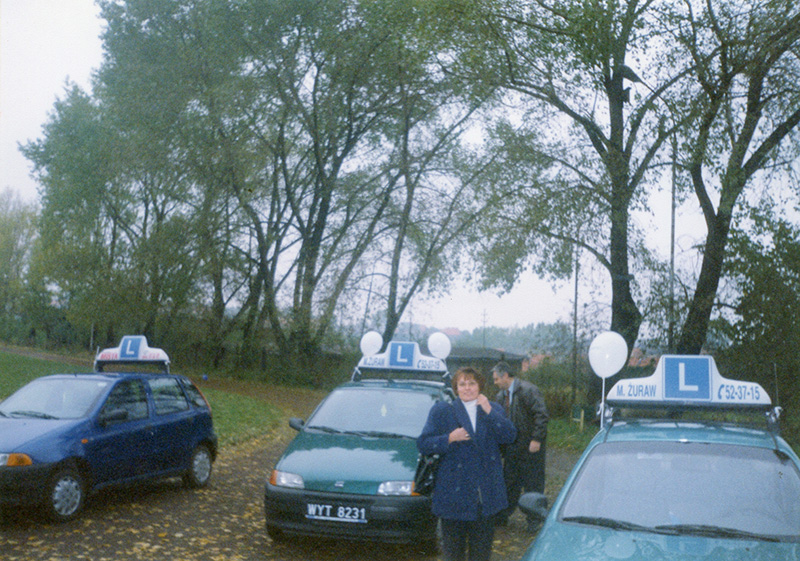 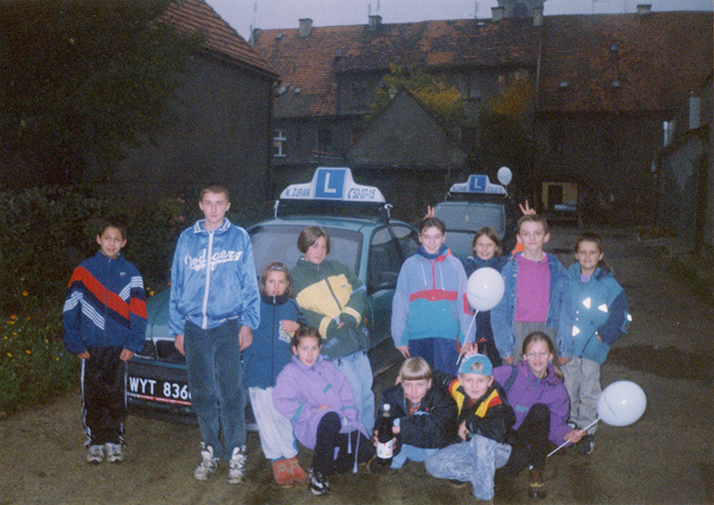 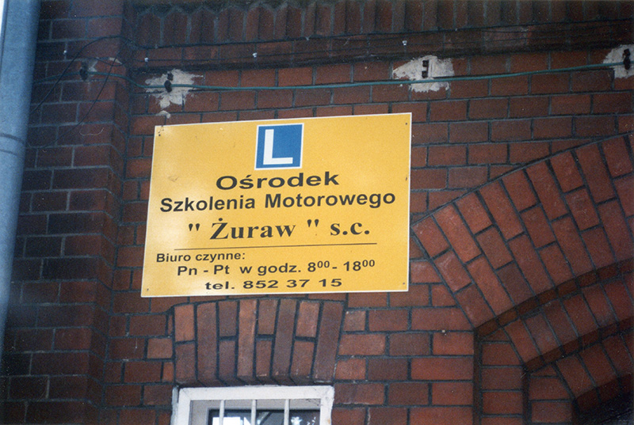W 2004 r. flota ośrodków szkolenia kierowców z obszaru byłego województwa wałbrzyskiego i wrocławskiego została zdominowana przez chyba najbardziej niezawodne pojazdy w historii szkolenia i egzaminowania kandydatów na kierowców, mianowicie samochody marki Fiat Panda.
Warto nadmienić, że w latach 2000 – 2004 szkolenie i egzaminowanie na terenie Wałbrzycha i okolic odbywało się na pojazdach marki: Daewoo Lanos i Matiz oraz Fiat Punto II. W opinii wielu instruktorów poczciwe pandy, niczym niezawodne i mocne „czołgi” są jednymi z najlepszych i praktycznych samochodów do szkolenia. Dlatego pojazdy te z literą „L” na dachu, można jeszcze spotkać na drogach naszego powiatu.
Poniższe zdjęcia przedstawiają naszą pracę z lat 2005 – 2006 oraz bazę pojazdów, którymi wówczas dysponowaliśmy.
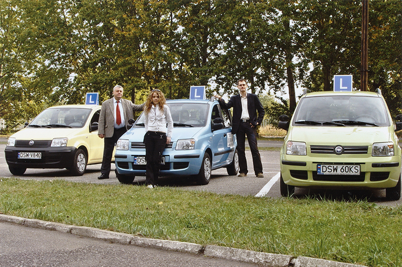 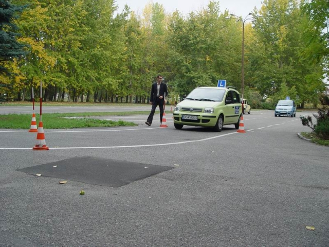 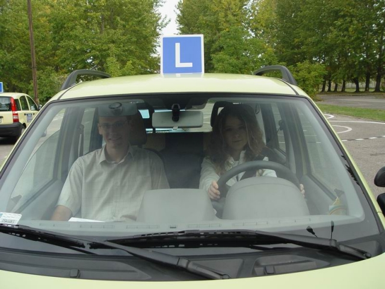 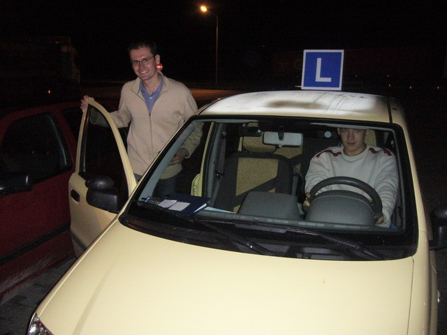 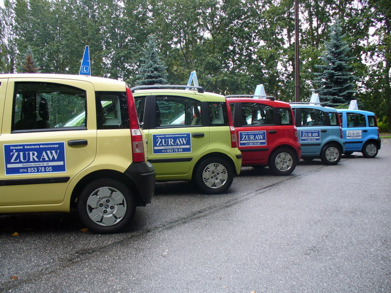W lutym 2006 r. Ośrodek Szkolenia Motorowego „ŻURAW” S.C. (w 2007 r. nazwa została zmieniona na Ośrodek Szkolenia Kierowców ŻURAW Paweł Żuraw) otworzył swoją siedzibę w Rynku. W nowej placówce odbywały się zajęcia teoretyczne. Można w niej było także załatwić wszelkie formalności dotyczące kursu na prawo jazdy. We wrześniu 2016 r. siedziba ta została zamknięta w związku z planowanym remontem budynku (Rynek 39-40) i przeznaczeniem go w przyszłości na działalność organizacji pozarządowych. Poniższe zdjęcia przedstawiają dziesięcioletnie funkcjonowanie biura OSK ŻURAW w części bloku śródrynkowego w Świdnicy.
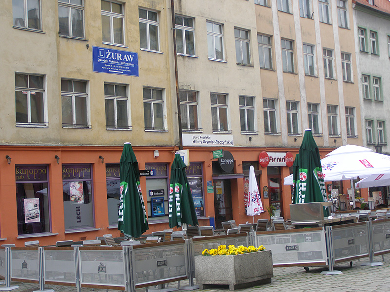 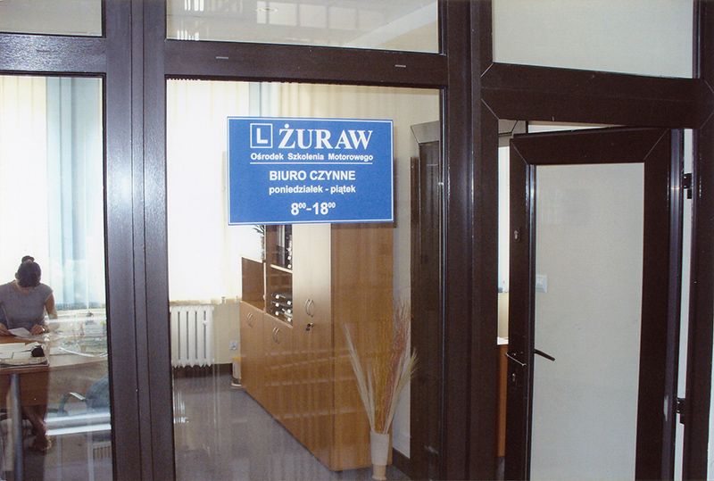 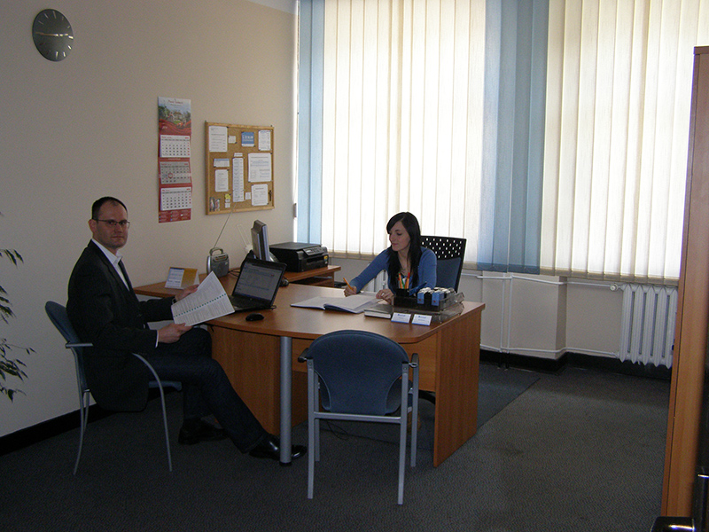 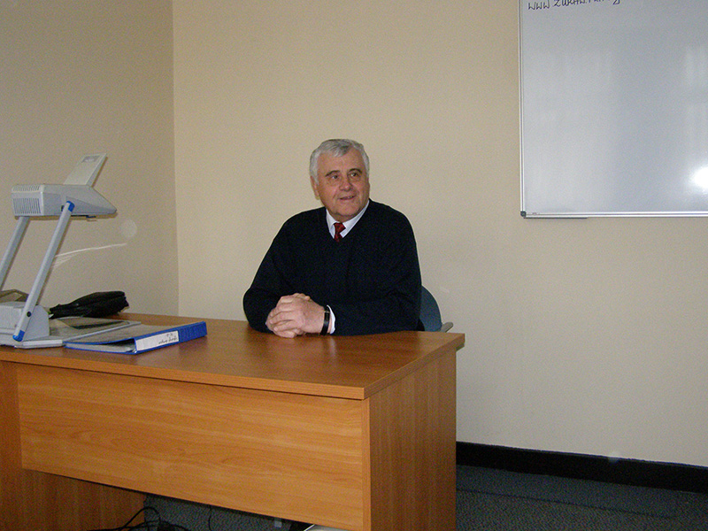W latach 2003 – 2010 swoją działalność szkoleniową koncentrowaliśmy głównie we Wrocławiu. Był to charakterystyczny okres, w którym zapanowała (bez obaw można użyć stwierdzenia) moda na zdawanie egzaminów na prawo jazdy w większym mieście. Wrocław stawał się coraz bardziej popularny ze względu na kilka czynników: wysokie tempo rozwoju aglomeracji miejskiej, wzrost liczby studentów pochodzących ze Świdnicy, a chcących uczyć się we Wrocławiu i przede wszystkim wyższą zdawalność w tamtejszym Wojewódzkim Ośrodku Ruchu Drogowego. Decyzje kursantów były również podyktowane charakterystycznym położeniem geograficznym Świdnicy pomiędzy Wałbrzychem a Wrocławiem. Mniejsze wówczas natężenie ruchu sprawiało, że z centrum Świdnicy można było dojechać do siedziby wrocławskiego WORD-u w niespełna godzinę.
Sytuacja odmieniła się wiosną 2009 r., kiedy wrocławski WORD wymienił flotę pojazdów egzaminacyjnych z wysłużonych pand na samochody marki Renault Clio. W tym samym czasie wałbrzyski WORD dysponował Fiatami, które służyły jeszcze do przeprowadzania egzaminów (po wymianie na nowsze modele w 2010 r.) do stycznia 2016 r.
Zdjęcia poniżej prezentują ówczesną siedzibę wrocławskiego WORD-u oraz trzydrzwiowe Renault Clio (będące własnością naszej firmy w latach 2009 – 2011), na którym zdawano egzaminy we Wrocławiu.
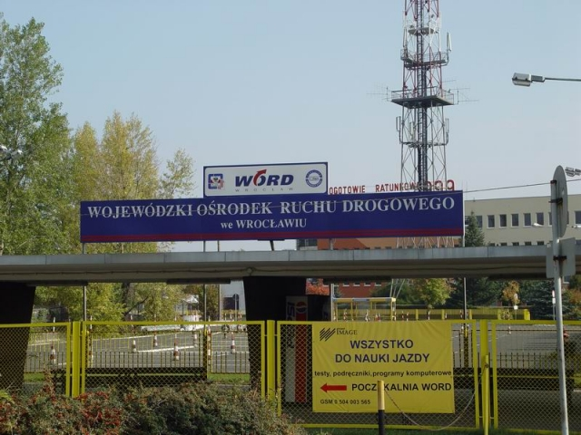 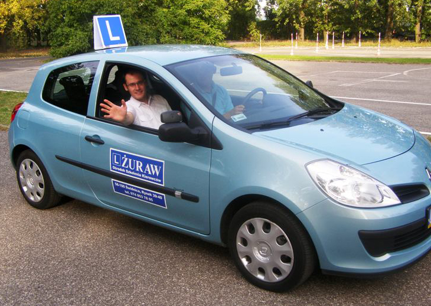Koniec pierwszej dekady XXI w. charakteryzował się intensywnym rozwojem branży szkoleniowej. Było to poniekąd związane z brakiem większych barier prawno-finansowych określających działalność szkół jazdy w Polsce. Zapoczątkowany został okres powstawania nowych ośrodków szkolenia kierowców również na terenie powiatu świdnickiego.
Sytuacja ta wymusiła konieczność optymalizacji kosztów, które stanowią newralgiczny punkt funkcjonowania każdej działalności gospodarczej. Ceny kursów na prawo jazdy zaczęły znacząco się obniżać. Kryzys finansowy początku drugiej dekady XXI w. sprawił, że dla potencjalnych klientów niekoniecznie istotna była jakość wykonanej usługi, co przede wszystkim jej cena. W 2011 r. podjęliśmy decyzję o pozostawieniu niezawodnych Fiatów do szkolenia i kierowaniu swoich kursantów na egzaminy do wałbrzyskiego WORD-u.
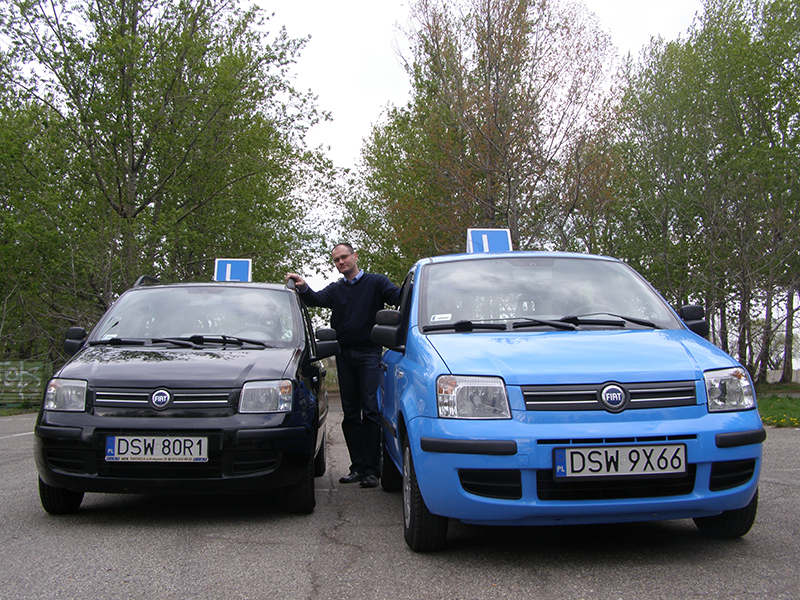 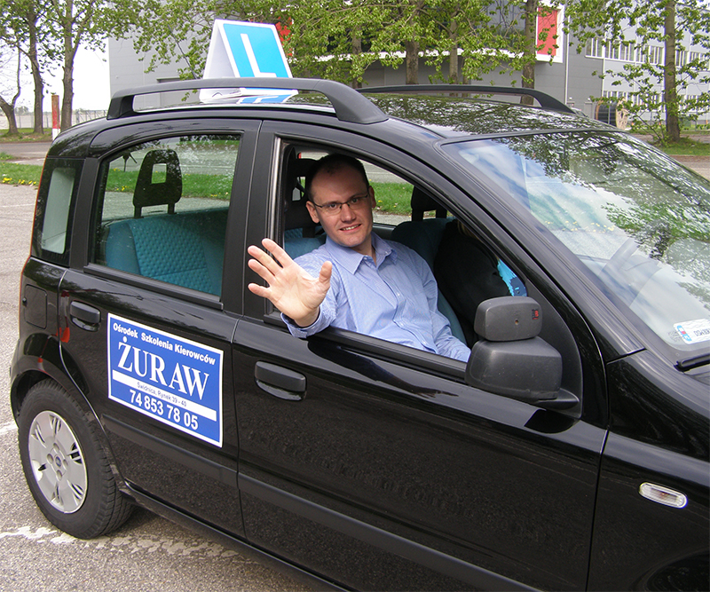W 2013 r. pojawiła się zmiana w ustawie o kierujących pojazdami umożliwiająca przeprowadzanie egzaminów na prawo jazdy w miastach tzw. prezydenckich. Powstała tym samym okazja wzrostu dostępności do egzaminów dla mieszkańców miast 50 – 70 tysięcznych, jak również sąsiadujących z nimi gmin wiejskich. Przed taką szansą stanęła Świdnica. Jednym z inicjatorów podjęcia rozmów z władzami miasta Świdnicy oraz kierownictwem WORD w Wałbrzychu był Paweł Żuraw, który został przedstawicielem strony społecznej w prowadzonych negocjacjach. Ostatecznie Oddział Terenowy w Świdnicy wałbrzyskiego WORD-u został uroczyście otwarty w dniu 17 kwietnia 2014 r. w obecności przedstawicieli ośrodka egzaminacyjnego z Wałbrzycha i Legnicy, a także władz samorządowych, miejskich i parlamentarzystów.
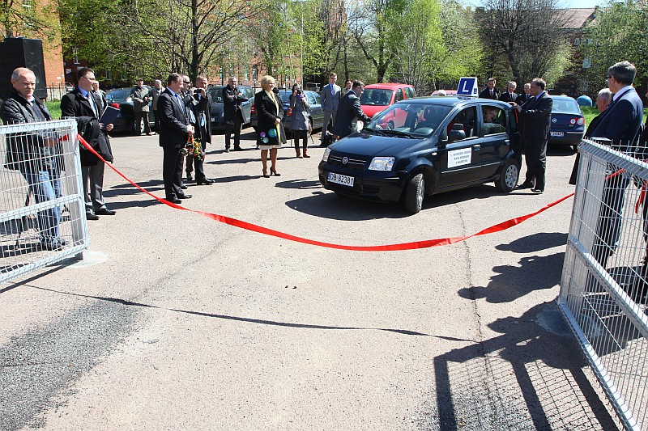 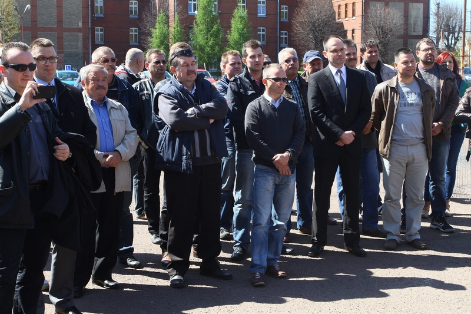 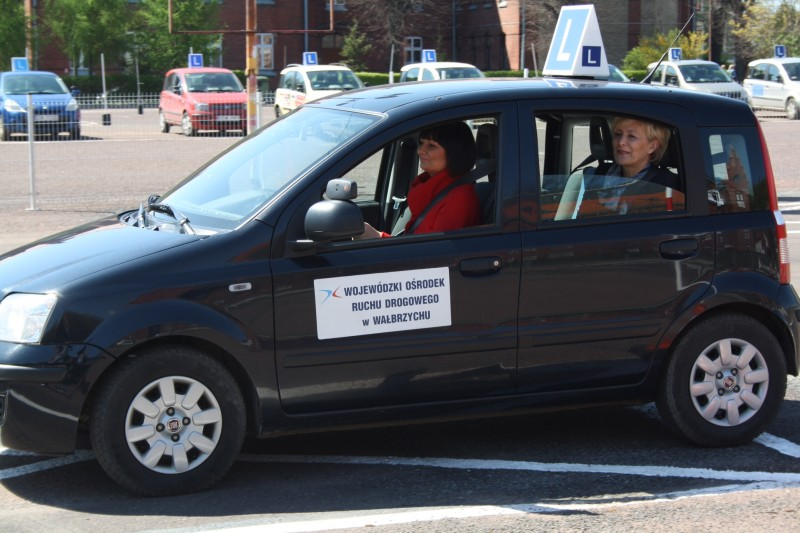 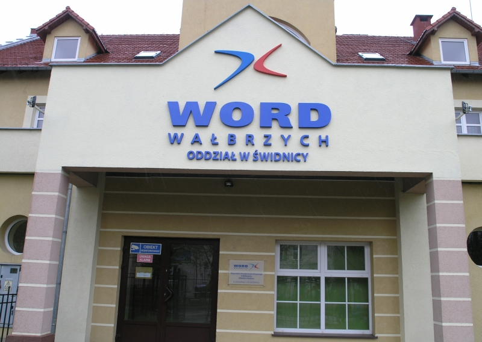Jesienią 2015 r. wałbrzyski WORD zaczął sukcesywnie wprowadzać do swojej floty samochody marki Toyota Yaris, na których obecnie zdaje się egzaminy państwowe. Ośrodek Szkolenia Kierowców ŻURAW zakupił taką samą wersję Toyoty we wrześniu 2015 r.
Obecnie prowadzimy szkolenie na Toyocie oraz dwóch „poczciwych klasykach”, jakimi są Fiaty Panda. Żartobliwie można powiedzieć, że jest to chyba efekt sentymentu. Warto przy tej okazji zaznaczyć, że istnieje możliwość wyboru pojazdu na egzaminie. Może to być pojazd szkoły jazdy, za użyczenie którego pobierana jest opłata lub Toyota pozostająca w dyspozycji ośrodka egzaminacyjnego.
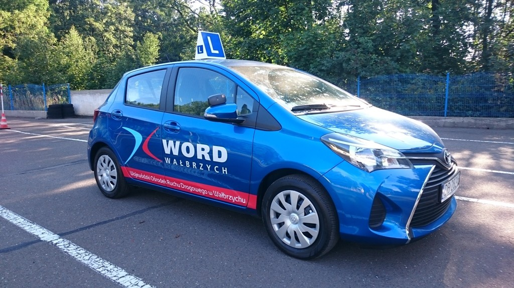 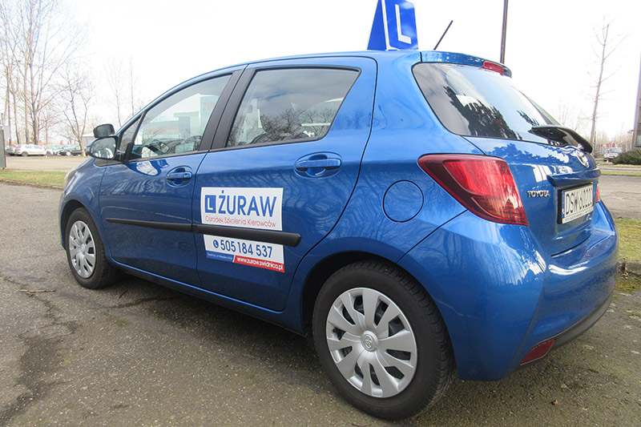Od 2018 r. zajęcia teoretyczne prowadzimy w budynku Społecznej Akademii Nauk, Wydziale Zamiejscowym w Świdnicy, ul. Franciszkańska 7, na I piętrze. Budynek uczelni mieści się naprzeciwko siedziby Multimediów.
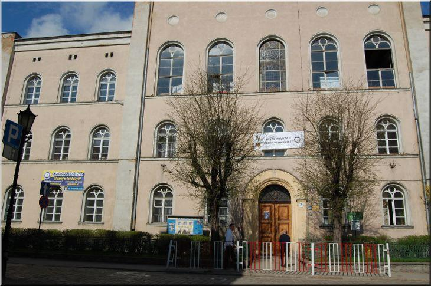 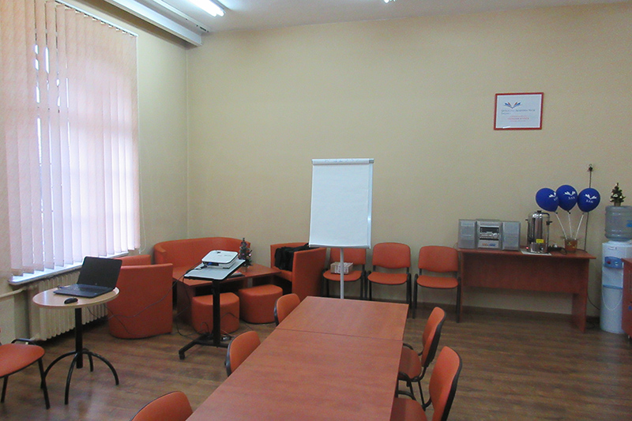 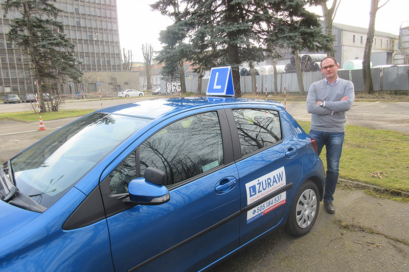Czego można życzyć wszystkim kandydatom na kierowców? Przede wszystkim dużo odwagi, spokoju, wytrwałości i oczywiście jak najmniej stresów w dążeniu do celu. Z kolei wszystkim kierowcom życzymy dużo wyrozumiałości, tolerancji i cierpliwości w jeździe za wolno (ale za to ostrożnie) poruszającymi się po Świdnicy „L-kami”.
Pozdrawiam serdecznie
Paweł Żuraw